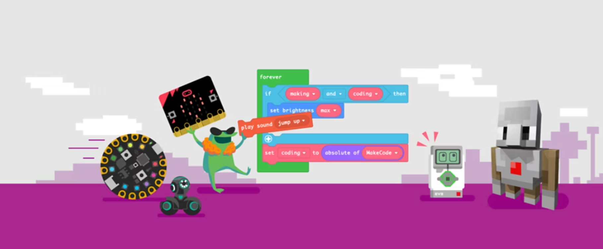

Existen muchas herramientas que nos permiten aprender a programar de manera fácil a través de bloques de programación. A continuación, mencionamos algunas de ellas:
Scratch
Esta herramienta es bastante intuitiva y fluida. Permite que los usuarios trabajen con lenguaje de programación en bloques usando piezas que se parecen a las de un rompecabezas.
Scratch Jr.
Se trata de una versión más sencilla y digerible de Scratch diseñada para los niños. Su manera de ofrecer la programación en bloques facilita el entendimiento de usuarios de muy corta edad.
Minecraft
Uno de los videojuegos más populares de los últimos años. Este permite a los jugadores trabajar algunos conceptos básicos de programación visual, aunque también, para usuarios un poco más avanzados, ofrece funciones para programar con lenguajes más tradicionales como JavaScript.
Arduino
Arduino ofrece dos modalidades de programación para niños: una visual y otra centrada en lenguaje de código escrito. La primera, que funciona con bloques con códigos integrados, es bastante popular en la enseñanza de robótica a niños pequeños.
Google Blockly
Google no se queda ajeno a este rubro educativo y también cuenta con su propia herramienta. Google Blockly se conforma de un conjunto de comandos que pueden ordenarse como piezas de rompecabezas. Es bastante sencillo de utilizar y está enfocados a usuarios pequeños que no necesariamente sepan escribir código.
Makecode
Microsoft MakeCode es una plataforma gratuita de código abierto para la creación de experiencias atractivas de aprendizaje de la informática que ayudan a progresar hacia la programación real.